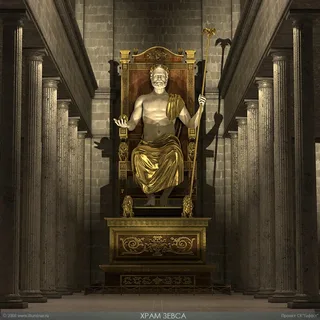
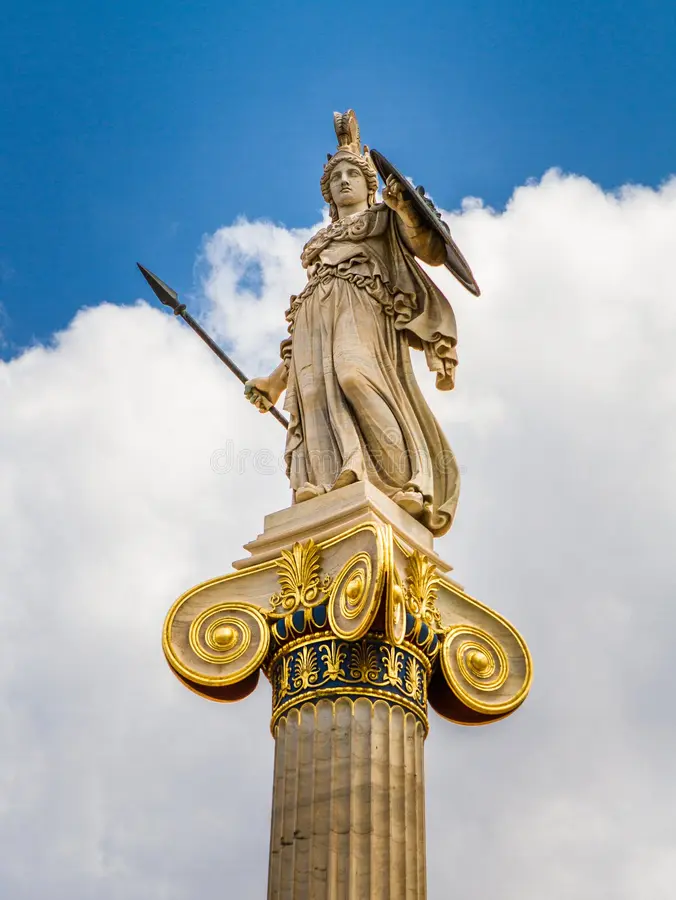
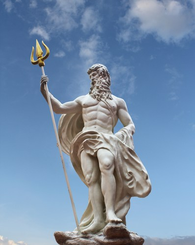

A mitologia grega é repleta de histórias fascinantes sobre deuses e heróis. Os deuses do Olimpo governavam o mundo e tinham personalidades marcantes.
Zeus era o deus dos céus e do trovão, governando o Olimpo com seu poderoso raio

Atena era a deusa da sabedoria e da estratégia de guerra, conhecida por sua inteligência e justiça.

Poseidon governava os oceanos e era conhecido por seu tridente poderoso.

Explore mais sobre a mitologia e descubra histórias incríveis!